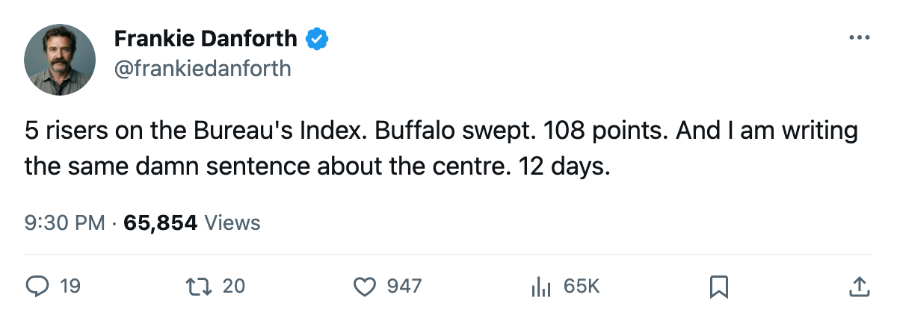

DANFORTH: 5 risers, a 4-game sweep, and the 1C slot stays empty
The Bureau's Development Index moved 5 Toronto players up in one edition. The centre behind Sundin is still a question mark with 12 days left.
 Frankie DanforthColumnist · Queen City Telegram
Frankie DanforthColumnist · Queen City Telegram
Code Green

The Bureau's Development Index moved 5 Toronto players up in this edition.  Marian Gaborik99 is up 6 from a base of 91 to an overall of 96, riding 83 points in 68 games.
Marian Gaborik99 is up 6 from a base of 91 to an overall of 96, riding 83 points in 68 games.  Barret Jackman86 is up 5, from 80 to 84.
Barret Jackman86 is up 5, from 80 to 84.  Rostislav Klesla87 is up 5, from 78 to 82.
Rostislav Klesla87 is up 5, from 78 to 82.  Rick Nash85 is up 5, from 77 to 81.
Rick Nash85 is up 5, from 77 to 81.  Brad Richards87 is up 4, from 82 to 85.
Brad Richards87 is up 4, from 82 to 85.
The Index measures current form, not potential, so all five are actually getting better right now.
Buffalo is swept. Four games, four regulation wins, zero losses, and the Sabres sit at 23-30-7 with 65 points.  Buffalo Sabres managed 1 goal on 2005-03-06 and finished the season series without a single victory.
Buffalo Sabres managed 1 goal on 2005-03-06 and finished the season series without a single victory.
 Toronto Maple Leafs is 47-12-4, 108 points, a 3-game winning streak, 28-7 at home, and 24-9 on the road. The Maple Leafs have scored 325 goals and allowed 165.
Toronto Maple Leafs is 47-12-4, 108 points, a 3-game winning streak, 28-7 at home, and 24-9 on the road. The Maple Leafs have scored 325 goals and allowed 165.
The centre behind  Mats Sundin92 still isn't here, and the trade deadline is 12 days out. Twelve days to find a man who wins a defensive-zone draw and makes a play on the rush.
Mats Sundin92 still isn't here, and the trade deadline is 12 days out. Twelve days to find a man who wins a defensive-zone draw and makes a play on the rush.  Jason Spezza73, 21, sits at 70 overall with 15 points in 37 games at 7.5 minutes a night. He is a prospect learning the league, not the man who takes a faceoff behind Sundin in a first-round series.
Jason Spezza73, 21, sits at 70 overall with 15 points in 37 games at 7.5 minutes a night. He is a prospect learning the league, not the man who takes a faceoff behind Sundin in a first-round series.
Petr Chlup87, 19, has 41 points in 57 games and plays the 42C slot. Vaclav Spacek81, 19, has 16 points in 45 games at 8.3 minutes a night.
 Bryan McCabe84 has 56 points in 68 games from a third-pair defenseman.
Bryan McCabe84 has 56 points in 68 games from a third-pair defenseman.  Gary Roberts85, 38, has 70 points in 68 games.
Gary Roberts85, 38, has 70 points in 68 games.  Alexander Mogilny89, 36, has 71 points in 64 games at 18.6 minutes a night. These men will not be 38 and 36 next season.
Alexander Mogilny89, 36, has 71 points in 64 games at 18.6 minutes a night. These men will not be 38 and 36 next season.
Panic Meter: Green. A team at 108 points with 5 men rising on the Index and a division lead is not in crisis. I would still rather be Orange with a new centre than Green without one.
